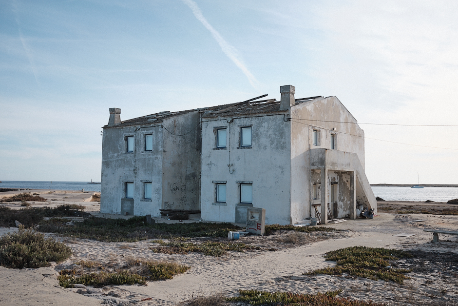
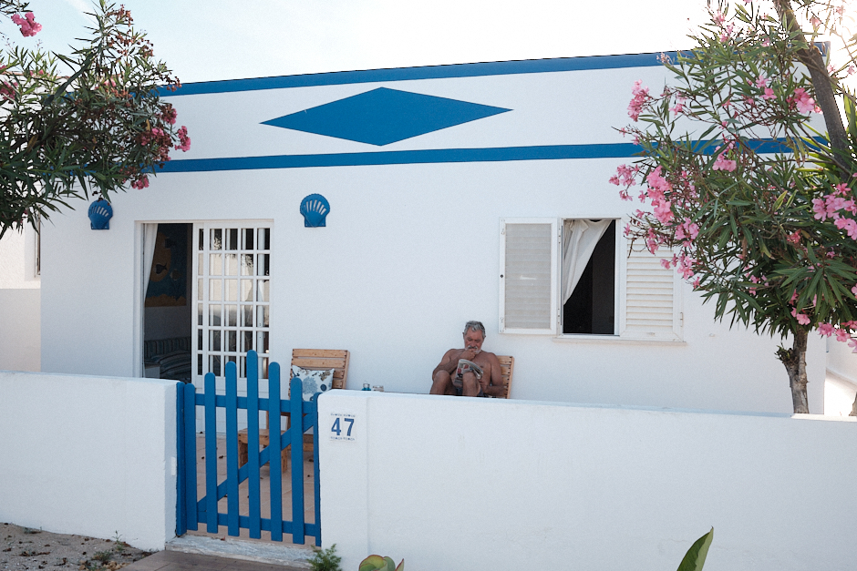
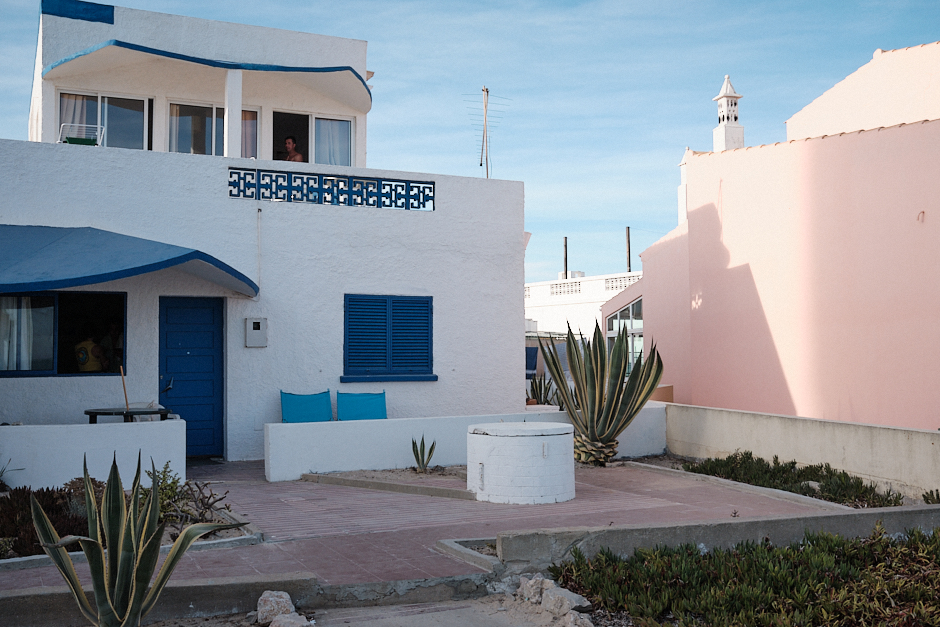
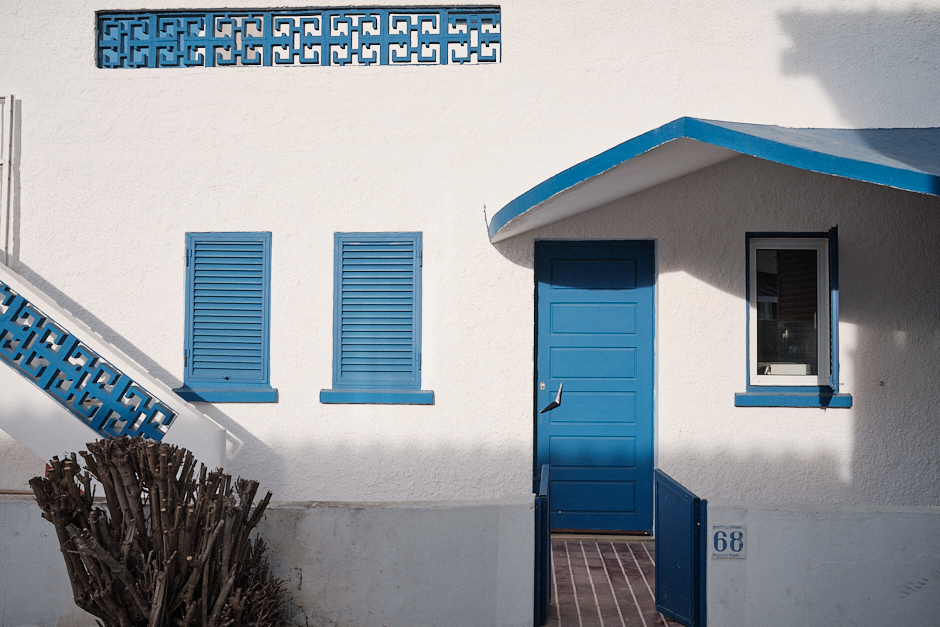

<main>
    <!-- Set the general css settings for the whole page. -->
    <link rel="stylesheet" href="Design/parent.css" />
  
    <head>
    
      <!-- Primary Meta Tags -->
      <title>Ege Ilicak | Farol Island</title>
      <meta name="title" content="Ege Ilicak | Photographer" />
      <meta name="description" content="Farol Island" />
  
      <!-- Open Graph / Facebook -->
      <meta property="og:type" content="website" />
      <meta property="og:url" content="https://egeilicak.com/" />
      <meta property="og:title" content="Ege Ilicak | Photographer" />
      <meta property="og:description" content="Farol Island" />
      <meta
        property="og:image"
        content="https://egeilicak.com/Resources/Photos/Farol/1.jpg"
      />
  
      <!-- Twitter -->
      <meta property="twitter:card" content="summary_large_image" />
      <meta property="twitter:url" content="https://egeilicak.com/" />
      <meta property="twitter:title" content="Ege Ilicak | Photographer" />
      <meta
        property="twitter:description"
        content="Farol Island"
  />
      <meta
        property="twitter:image"
        content="https://egeilicak.com/Resources/Photos/Farol/1.jpg"
      />
  
      <!-- Google Site Verification -->
      <meta
        name="google-site-verification"
        content="45D1GVF2rjrbKqV84eEkvT6AadyhlfalHpBzB1VXkVA"
      />
    </head>
  
  <meta name="viewport" content="width=device-width, initial-scale=1" />
  <body onkeydown="SlideByKey()" onresize="CheckPageWidth()">
  
    <span id="LeftMenu" class="Menu Left w3-xlarge w3-padding-large" ><a href="index.html" >EGE ILICAK</a></span>
    <span id="RightMenu" class="Menu Right w3-xlarge w3-padding-large" style="cursor: pointer"></span>
    <span id="MobileMenu" class="MobileMenu"><div id="MobileMenuContent" class="MobileMenuContent w3-xxlarge"></div></span>
    <script src="Controller/navigator.js"></script>
  
    <div class="imageContainer">
        
        
        
        
        
        
        
        
        
       <div class="w3-container w3-center w3-xlarge w3-mobile w3-padding-large"> <p class=" w3-large w3-center" id="IC">1 / 9</p></div>
     </div>
    
  </div>
      <script src="Controller/slider.js"></script>
      <script type="text/javascript">
        SetTotalImageCount(9);
      </script>
      <!-- Important: Set the total image count accordingly! -->
    </body>
  </main>
  